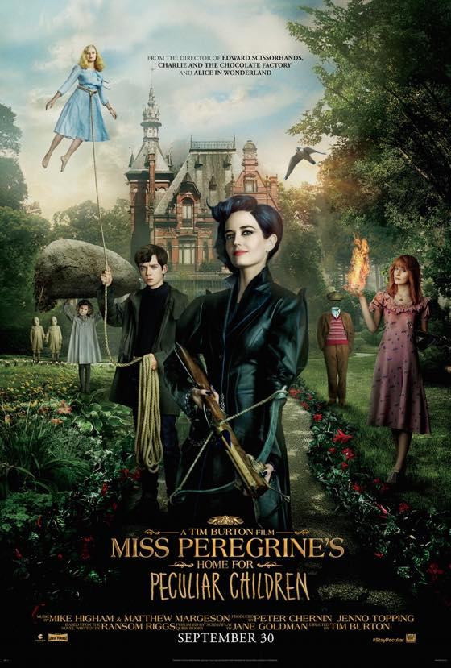
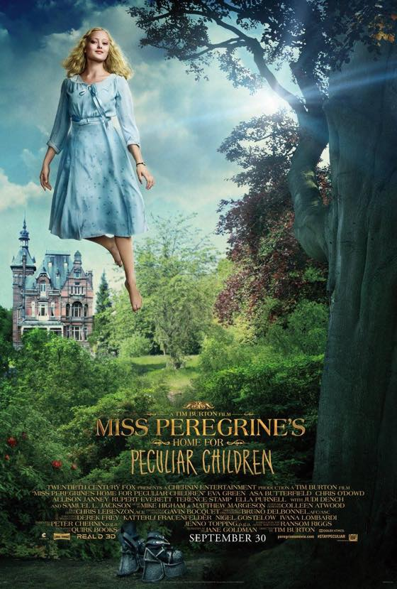

Miss Peregrine's Home For Peculiar Children, 2016
미스 페레그린과 이상한 아이들의 집
저로서는 드물게 개봉일에 맞춰서 보고 왔습니다.
팀버튼 영화다 와아~
에바그린 멋졍/// 캐릭터가 좋았는데 생각보다 그 특징(?)이 드러나지 않은게 아쉽습니다 :p
팀버튼 감독의 여배우 취향 너무 잘알거 같아 ㅋㅋㅋㅋㅋㅋㅋ 하얗고 가는 백금발 캐릭터 꾸준히 나오네욤
보면서 맨슨 뮤비 생각도 살짝했습니다. freak show 란 단어가 떠오르더군욤
최고는 역시 놀이공원 격투씬 ㅋㅋㅋㅋㅋㅋㅋㅋㅋ
8월에 댕겨온 브라이튼 피어도 생각나고 너무 팀버튼 스러워서 완전 빵터졌어요 ㅋㅋㅋㅋㅋㅋㅋㅋㅋ

슈즈디자인이 맘에들어///
동행한 지인은 팀버튼 오리지널 스토리로 영화를 만드는게 훨 좋다고 그러더군욤
전혀 팀버튼 스럽지 않아서 자긴 조금 실망했다고 하던데
저는 재미있게 잘 봤습니다 :p 하지만 not bad but not great 란 표현에는 동의해요
재밌게 봤지만 영화관에서 안봐도 그렇게까지 아쉬울건 없는 정도 라고 생각합니다 ^^